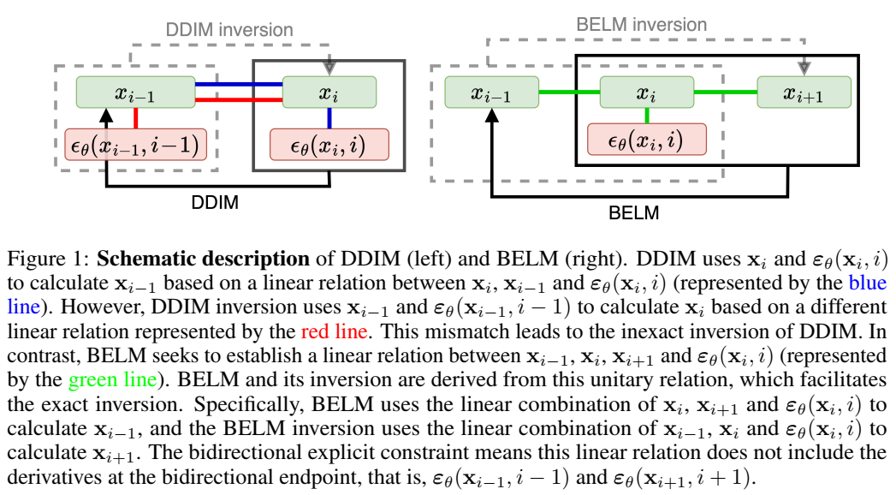
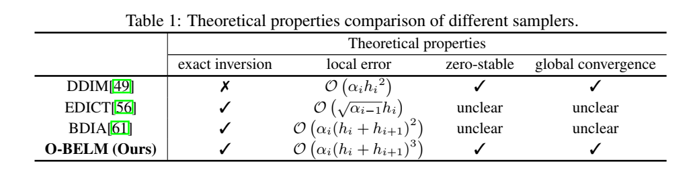
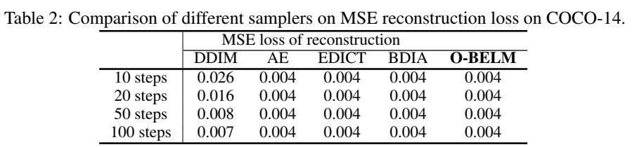
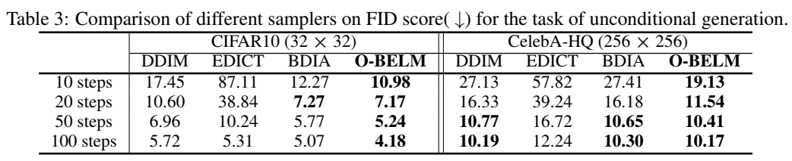
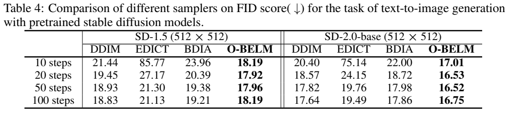
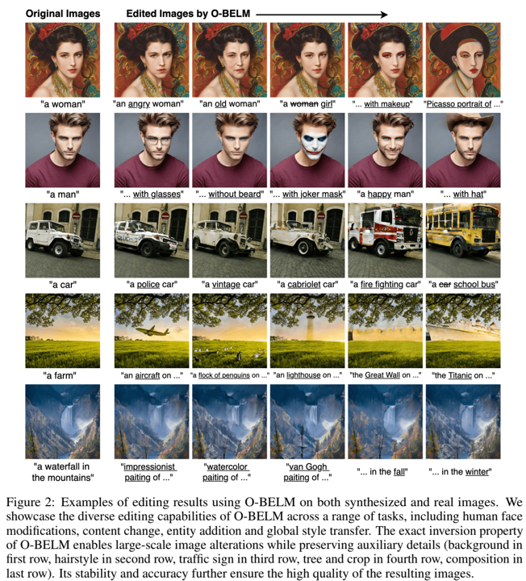
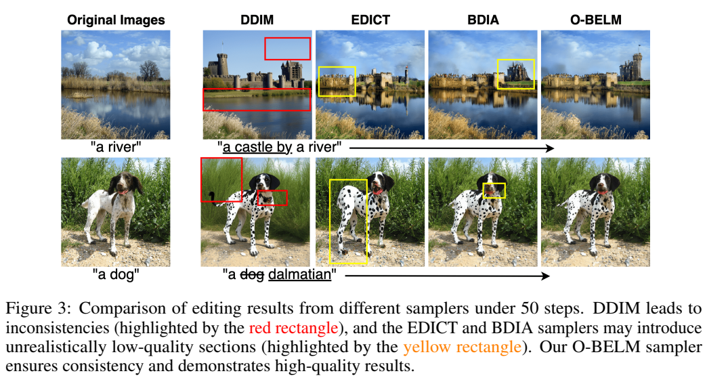

摘要
扩散模型采样的反演旨在找到样本的相应初始噪声，在各种任务中起着至关重要的作用。最近，已经提出了几种启发式精确反演采样器，以无需训练的方式解决不精确反演问题。然而，这些启发式采样器的理论性质仍然未知，它们的采样质量往往很差。本文介绍了一种精确反演采样器的通用公式，即双向显式线性多步（BELM）采样器，其中包括所有先前提出的启发式精确反演采样器作为特例。BELM公式是通过整合双向显式约束，从变步长变公式线性多步方法中推导出来的。我们强调这种双向显式约束是数学精确反演的关键。我们系统地研究了BELM框架内的局部截断误差（LTE），并表明现有的精确反演采样器的启发式设计产生了次优LTE。因此，我们通过LTE最小化方法提出了最优BELM（OBELM）采样器。我们进行了额外的分析，以证实所提出的最优采样器的理论稳定性和全局收敛性。综合实验表明，我们的O-BELM采样器在实现高质量采样的同时建立了精确的反演特性。图像编辑和图像插值的其他实验突出了O-BELM在不同应用中的广泛潜力。论文地址
引言
新兴的扩散模型（DM）[48,16,51,52]通过学习反向扩散过程从初始噪声中生成数据分布样本，已被证明是一种有效的数据分布建模技术，特别是在生成高质量图像方面[40,9,46,42,44,17]。DM中的扩散过程及其采样过程可以描述为正向和相应的反向随机微分方程（SDE）[52,1]。此外，采样过程也可以表示为确定性扩散常微分方程（ODE）[52,49]，在某些论文中也称为概率流ODE（PF-ODE）。值得注意的是，反向SDE和扩散ODE共享相同的边际分布[52]。
扩散采样的反演旨在阐明样本与初始噪声之间的对应关系，在DM的各种任务中起着至关重要的作用。扩散反演具有各种下游应用，包括图像编辑[14,53]、图像插值49、修复[6]和超分辨率[58]。几项研究[27,26,6]试图在基于SDE的扩散采样背景下解决反演任务。然而，由于SDE的固有随机性，这些工作无法实现数学上精确的反演。
相比之下，扩散ODE自然给出了样本和噪声之间的对应关系。著名的DDIM49及其反演是通过考虑扩散常微分方程的一阶显式欧拉离散化而公式化的。然而，如[14]的工作所述，由于DDIM与其反演之间的原理图不匹配，DDIM反演引入了不一致问题（见图1）。使用DDIM反转从x0编码到xT，然后使用DDIM解码，通常会导致原始样本的不精确重建（见图4）。为了实现精确反演，null-text inversion[38]的工作引入了迭代优化的强化训练，但仍无法实现数学上精确的反演。
DDIM（左）和BELM（右）的示意图说明。DDIM使用 xi 和 ϵθ(xi,i) 来计算 xi−1 ，基于xi ， xi−1和 ϵθ(xi,i) 之间的线性关系（由蓝线表示）。然而，DDIM反演使用 xi−1 和 ϵθ(xi−1,i−1) 来计算 xi ，基于不同线性关系，由红线表示。这种不匹配导致DDIM反演的不准确。相反，BELM试图建立 xi1 ， xi ， xi+1 和 ϵθ(xi,i) 之间的线性关系（由绿线表示）。BELM及其反演都是从这种单一关系推导出来的，这有助于精确反演。具体地，BELM使用 xi 、 xi+1 和 ϵθ(xi,i) 的线性组合来计算 xi−1，BELM的反演使用 xi−1 、 xi 和 ϵθ(xi,i) 的线性组合来计算 xi+1 。双向显式约束意味着该线性关系不包括双向端点处的导数，即 ϵθ(xi−1,i−1) 和 ϵθ(xi+1,i+1) 。

最近，已经提出了几种启发式精确反演采样器，以无需训练的方式解决这种不精确反演问题[56,61]。这些采样器能够实现数学上精确的反演，而不需要额外的训练，因此与预训练的模型兼容。从归一化流中的仿射耦合层[10,11]中获得灵感，EDICT[56]直观地引入了辅助扩散状态，并对原始和辅助扩散状态执行交替的混合更新。后来，BDIA[61]采用对称双向积分结构直观地实现了精确反演。然而，这些启发式精确反演采样器由于其直观的公式设计，往往会影响采样质量。它们还可能引入不希望的额外计算开销或非鲁棒超参数。
本文中，我们开发了一个通用的精确反演采样器的通用公式，称为双向显式线性多步（BELM）采样器。我们证明，之前提出的所有启发式精确反演采样器实际上都是BELM采样器的特殊实例。BELM的概念源于对DDIM公式与其反演公式之间不匹配的观察。BELM 是通过建立一种统一关系来制定的，BELM 及其反演都是由这种关系推导出来的。更具体地说，BELM的统一关系是以可变步长可变公式（VSVF, variable-stepsize-variable-formula）线性多步方式构建的，并辅以额外的双向显式约束以促进精确反演。
我们系统地研究了BELM框架内的局部截断误差（LTE），并表明现有的精确反演采样器的启发式设计产生了次优LTE。因此，我们采用LTE最小化方法来设计BELM内最优情况的公式，我们称之为O-BELM。O-BELM的公式根据时间步长动态调整，从而确保最小化局部误差，从而产生尽可能高的采样精度。此外，我们证明了O-BELM具有理想的零稳定性，这使得O-BELM对初始值具有鲁棒性。它还具有全局收敛的有益特性，防止O-BELM在采样过程中发散。据我们所知，O-BELM是第一个理论上有保证的精确反演扩散采样器。
我们在COCO数据集上进行了图像重建实验，以验证我们的O-BELM确实实现了精确的反演，从而使其能够精确地恢复复杂的图像特征。此外，涉及无条件和条件图像生成的实验表明，O-BELM可以确保高采样质量。在图像编辑和图像插值等下游任务中的额外实验突显了O-BELM的广泛应用潜力。
准备工作
扩散模型和扩散SDEs
假设我们有一个d维随机变量 x(0)∈Rd ，遵循未知的目标分布 q0(x0) 。扩散模型（DM）定义了一个正向过程 {x(t)}t∈[0,t] ，其中 T>0 ,从 x(0) 开始，使得以x(0)为条件的x(t)的分布满足：
qt∣0(x(t)∣x(0))=N(x(t);α(t)x(0),σ2(t)I),(1)
其中， α(⋅),σ(⋅)∈C([0,T],R+) 具有有界导数，出于简化，将其表示为 αt 和 σt 。 αt 和 σt 的选择称为DM的噪声表。根据[29,25,34]，在 α(⋅) 和 σ(⋅) 的一些假设下，正向过程可以建模为线性SDE，也称为Ornstein-Uhlenbeck过程：
dx(t)=f(t)x(t)dt+g(t)dBt,(2)
其中， Bt 是标准d维布朗运动（BM）， f=dtdlogαt 和 g2(t)=dtdσ2−2dtdlogαtσt2 。在一些规律性条件下，上述前向SDE（2）具有一个从时间T到0的反演SDE，它从x(t)[1]开始：
dx(t)=[f(t)x(t)−g2(t)▽x(t)logq(x(t),t)]dt+g(t)dB^t,(3)
其中， B^t 是逆向时间布朗运动， q(x(t),t) 是前向过程的单次边界分布。实际中，DMs[16,52]]使用 ϵθ(x(t),t) 来估计 −σ(t)▽x(t)logq(x(t),t) ,并且通过以下目标优化参数 θ ：
θstar=θargminEt{λtEx0,xt[∣∣sθ(xt,t)−▽xtlogp(xt,t∣x0,0∣∣2)]},(4)
扩散ODE和DDIM
值得注意的是，逆向SDE（3）具有相关的概率流ODE（也称为扩散ODE），这是一个具有相同单次边际分布的确定性过程[52]：
dx(t)=[f(t)x(t)−21g2(t)▽x(t)logq(x(t),t)]dt.(5)
将 f(t) 和 g(t) 带入方程（5），我们得到以下一阶形式：
d(αtx(t))=ϵθ(x(t),t)d(αtσt).(6)
著名的DDIM采样器[49]可以通过应用显式Euler方法到方程（6）中获得：
xi−1=αiαi−1xi+(σi−1−αiαi−1σi)ϵθ(xi,i).(7)
DDIM的反演通过应用显式Euler方法到方程（6）的逆向获得：
xi=αi−1αixi−1+(σi−αi−1αiσi−1)ϵθ(xi−1,i−1).(8)
扩散模型的直观精确反演采样器
实际中，我们观测到DDIM反演（8）的一个不一致性的问题。考虑一个样本 x0 ，使用DDIM反演，我们获得相应的噪声 xT ，然后使用DDIM重建 x0⋆ 。重构的 x0⋆ 将与原始样本 x0 表现出明显的一致性。最近，有人启发式地提出了两个精确反演采样器EDICT和BDIA，以无需训练的方式解决这种不一致问题。
EDICT采样器 受到归一化流[10,11]中仿射解耦层的启发，最近的工作[56]提出了EDICT来执行精确的扩散反演。基本观点是引入一个辅助扩散状态 yt 来解耦 xt 。 表示 ai=αiαi−1 和 bi=σi−1−αiαi−1σi ,EDICT公式写为：
{xiinter=aixi+biϵθ(yi,i),yiinter=ayyi+biϵθ(x(t)inter,i),xi−1=pxiinter+(1−p)yiinter,yi−1=pyiinter+(1−p)xi−1.(9)
其中， p∈(0,1) 是混合系数。EDICT反演的的详细信息请参见附录A.1。
BDIA采样器 BDIA采样器[61]利用对称双向积分结构来获得精确反演。BDIA将DDIM（7）的表达式重述为 xi−1DDIM=xiDDIM+△(i→i−1∣xiDDIM) ，DDIM反演（8）的表达式重述为 xiDDIM=xi−1DDIM+△(i−1→i∣xi−1DDIM) 。BDIA直观上利用 −[(1−γ)(xi+1−xi)+γ△(i→i+1∣xi)] 来近似从 xi+1 到 xi 的增量，△(i→i−1∣xi) 作为 xi 到 xi−1 的增量。因此，BDIA的更新规则写为：
xi−1=xi+1increment(xi+1→xi)−[(1−γ)(xi+1−xi)+γ△(i→i+1∣xi)]+increment(xi→xi+1)△(i→i−1∣xi).(10)
BDIA及其反演的综合公式见附录A.2。
然而，这些启发式采样器的理论性质仍然未知，它们的采样质量往往受到影响。据我们所知，目前还没有系统的方法来推导出同时具有精确扩散反演特性并保持高采样质量的扩散采样器。
通用双向显式线性多步（BELM）采样器
在本节中，我们首先将扩散采样过程建模为适定初值问题，以方便后续分析。通过对DDIM反演的重新思考，我们以变步长可变公式（VSVF）的方式提出了通用的双向显式线性多步（BELM）采样器。我们进一步说明，EDICT和BDIA实际上是BELM框架的特殊实例。
扩散采样问题作为IVP
通过表示 xˉ(t)≡αtx(t) ， (ˉσ)(t)≡αtσt 和 ϵˉθ(xˉ(t),σˉt)≡ϵ(x(t),t) ， DMs（6）的确定采样过程可以视为特殊的逆向时间扩散初始值问题（IVP，initial value problem）[54, p.310][3, p.3]：
dxˉ(t)=ϵˉθ((ˉx)t,(ˉσ)t)dσˉt,(11)
其中， xˉ(T)=x(T)/αT 。在进一步分析之前，一个基本问题是给定的扩散IVP（11）是否允许任何解，如果是，这个解是否是唯一的。首先，我们需要对扩散抽样问题（6）建立一些正则性假设。
假设 1 ϵθ(x,t) 在t上是连续的，对于x是Lipschitz连续的，Lipschitz常量为 Lϵθ ，这意味着 ∣∣ϵθ(x1,t)−ϵθ(x2,t)∣∣2≤Lϵθ∣∣x1−x2∣∣2 。
假设1是DM文献[50]中噪声预测器εθ（x，t）的常见假设。在假设1的条件下，我们可以通过直接应用IVP理论中的存在唯一性定理来确认扩散IVP（11）是适定的[3，p.23]。
命题 1 在假设1下，扩散 IVP (11) 存在唯一的解。
本文中， x(⋅) 表示连续解，xi表示数值近似。
对DDIM反演的重新思考 如图1所示，DDIM（7）及其反演（8）基于不同的线性关系推导。我们证明这种不匹配导致不准确的DDIM反演。基于这个观测，一个自然而然的想法是基于与DDIM相同的线性关系构建DDIM反演，以消除这种不匹配。遗憾地是，DDIM构建在 xi 、 xi−1 和 ϵθ(xi,i) 之间的关系上（利用 xi 和 ϵθ(xi,i) 来计算 xi−1 ），DDIM反演不能用于直接计算 xi ，由于 ϵθ(xi,i) 在DDIM反演的情况下还是未知的。这种关系对于DDIM是显式的，但对DDIM反演是隐式的。应该注意的是，隐式方程必须使用迭代方法，例如牛顿方法[54, p.19]，来求解，这很耗时，在DM的背景下可能会引入数值误差[19,35]。
为了解决这个问题，我们在相邻状态和导数之间建立了一种新的关系，可以在两个方向上明确计算。随后，我们基于这种奇异线性关系来制定采样器及其反演，以实现精确的反演。这是BELM采样器的基本概念。
双向显式线性多步（BELM）采样器 为了在 xi 、 xi−1 、 ϵθ(xi,i) 和 ϵθ(xi−1,i−1) 之间建立可以明确双向计算的线性关系，我们必须排除 ϵθ(xi,i) 和 ϵθ(xi−1,i−1) 。然而，这种排除导致了一种缺乏足够信息的关系。因此，必须考虑到更多的状态。这促使我们探索线性多步（LM）方法的概念[3，p.111]，作为推导相邻状态与扩散IVP导数之间线性关系的一种手段。然而，DMs的常用噪声调度会导致 {σˉi} ，i = 1 … N。的非等距序列。因此，我们将以可变步长可变公式（VSVF）的方式考虑它，而不是固定步长的经典LM方法[7]，该方式使用针对不同步长的动态多步公式。设 t0<t1<...tN=t0+T 是 [t0,t0+T] 中的一个网格，hi=σˉi−σˉi−1 , i=N...1 ， h0=sigmaˉ0 以及 h = max\mahtcal{h}_i ，k步VSVF LM方法对于方程（11）将在点 σˉi−1 计算 xˉi−1 ,使用如下微分方程：
xˉi−1=j=1∑kai,j⋅xˉi−1+j+j=0∑kbi,j⋅hi−1+j⋅ϵˉθ(xˉi−1+j,σˉi−1+j),(12)
其中更新系数和步长都取决于i。在本文中，除非另有明确说明，否则默认情况下，任何对LM的引用都意味着VSVF LM。如果方程（12）中所有i的 bi,0=0 ，则该方法称为显式，因为该公式可以直接计算 xˉi−1 。显然，LM（12）具有一个反向公式，该公式也是k步LM，如下所示（假设 ai,k=0 ）:
xˉi−1+k=ai,k1⋅xˉi−1−j=1∑k−1ai,kai,j⋅xˉi−1+j+j=0∑kai,kbi,j⋅hi−1+j⋅ϵˉθ(xˉi−1+j,σˉi−1+j).(13)
如果反向VSVFM是显式的，即对于所有i， bi,k=0 ，则我们称原点LM（12）为后向显式的。现在我们可以定义一个k步LM，当它是显式的和后向显式的时，它是双向显式的。我们称LM采样器遵守双向显式约束为双向显式线性多步（BELM）采样器，其一般形式为：
xˉi−1=j=1∑kai,j⋅xˉi−1+j+j=1∑k−1bi,j⋅hi−1+j⋅ϵˉθ(xˉi−1+j,σˉi−1+j).(14)
我们强调这种双向显式约束是数学上精确扩散反演的关键：
命题 2 任何 ai,k=0 的BELM方法（14）都具有精确的反演性质。
例如，在方程式（14）中设置k=2，得到2步BELM扩散采样器：
xˉi−1=ai,2xˉi+1+ai,1xˉi+bi,1hiϵˉθ(xˉi,σˉi).(15)
有关3步BELM扩散采样器、一般k步情况及其最佳设计的详细信息，请参阅附录A.4和A.5。在本文的主体部分，除非明确说明，否则我们将默认为两步情况。
BDIA和EDICT作为BELM的特例 我们发现，尽管BDIA和EDID都是从启发式思想发展而来的，但它们都是BELM框架内的特例。也就是说，它们的精确反演特性继承了它们基本上是BELM采样器实例的事实。

备注 1 EDICT（9）和BDIA（10）都是BELM框架内的特例。
备注1的详细数学推导见附录A.7和A.8
最佳BELM（O-BELM）取样器
在本节中，我们系统地研究了BELM框架内的局部截断误差（LTE），并表明现有的精确反演采样器的启发式设计产生了次优LTE。因此，我们引入了最优BELM（O-BELM），它利用了通过LTE最小化方法开发的更精细的动态公式。进一步分析证实了O-BELM的理论稳定性和全局收敛性。
局部截断误差分析
局部截断误差（LTE）量化了步骤更新中引入的误差。具体来说，它计算数值解与其基础真解之间的差异，假设在先前状态下对真解有完全的了解。
定义 1 BELM（15）在每个步骤i的 xˉi 上的LTE定义为：
Ti=xˉ(ti−1)−ai,2xˉi+1−ai,1xˉi−bi,1hiepsilonˉθ(xˉi,σˉi).(16)
在假设2（详见附录A.3）下，我们可以利用泰勒展开来研究BELM（15）的LTE，如下所示：
命题 3 在假设2下，BELM（15）的LTE给出了以下一般形式：
Ti=ci,1xˉ(ti−1)+ci,2ϵˉθ(xˉ(ti−1),σˉi−1)+ci,3▽σˉi−1ϵˉθ(xˉ(ti−1),σˉi−1)+O((hi+hi+1)),(17)
其中， ci,1=1−ai,1−ai,2 ， ci,2=−ai,1hi−ai,2(hi+hi+1)−bi,1hi ， 和 ci,3=−2ai,1hi2−2ai,2(hi+hi+1)2−bi,1hi2 。
在DM的任务中，我们主要关注的是 xi−1 上的LTE，而不是 xˉi−1 。我们将 xi 上的LTE表示为 ei 。很明显ei=αi−1Ti 。我们对现有采样器的LTE进行了如下研究：
推论 1 在假设2下，DDIM采样器（7）的LTE ei 为 O(αi−1hi2) ；对于任何固定的 γ∈[0,1] ，BDIA采样器（10）的LTE ei 为 O(αi−1(hi+hi+1)2) ；对于任何常数 p∈(0,1) ，EDICT采样器（9）的LTE ei 为 \mathcal{O}(sqrt{\alpha_{i-1}}h_i)$ 。
通过LTE最小化实现最佳BELM采样器
然后，我们证明，通过精心设计公式，与现有的次优实例相比，我们可以在BELM框架内实现更高阶的LTE。具体来说，我们利用了LTE最小化方法，其灵感来自著名的LM方法的设计，如Adams–Bashforth方法[2]或Adams–Moulton方法[39,36]。
命题 4 在假设2下，当公式设计为 ai,1=hi+12hi+12−hi2 ， ai,2=hi+12hi2 ， bi,1=−hi+1hi+hi+1 时，BELM扩散采样器（15）的LTE Ti 可以精确到 O((hi+hi+1)3) 。
当这满足时，显然， xi−1 上的LTE ei 是 O(αi(hi+hi+1)3) 。将设计公式代入（15），我们推导出了最优BELM（O-BELM）采样器：
xi−1=hi+12hi2αi+1αi−1xi+1+hi+12hi+12−hi2αiαi−1xi−hi+1hi(hi+hi+1)αi−1ϵθ(xi,i).(18)
O-BELM扩散采样器（18）的反演写为：
xi+1=hi2hi+12αi−1αi+1xi−1+hi2hi2−hi+12αiαi+1xi+hihi+1(hi+hi+1)αi+1ϵθ(xi,i).(19)
O-BELM的进一步理论分析
在这里，我们进一步证明了O-BELM不仅在局部精度方面超越了其他方法，而且在稳定性和全局收敛性方面也表现出色。
从（15）中可以清楚地看出，在将方法应用于扩散IVP之前，我们需要初始值。其中，初始条件给出了初始值，但其他条件必须通过其他方式计算，例如使用DDIM。无论如何，起始值将包含数值误差，确保初始值的扰动不会导致后续步骤中的误差爆炸至关重要。这一概念在数值分析中被概括为零稳定性。
定义 2 LM（12）被认为是零稳定的，如果存在一个常数K，使得对于由相同公式生成但起始值不同的任意两个序列 {xˉi} 和 {zˉi} ，分别为 xˉN,xˉN−1,...,xˉN−k+1 和 zˉN,zˉN−1,...,zˉN−k+1 ，我们有
∣∣xˉi−zˉi∣∣≤Kmax{∣∣xˉN−zˉN∣∣,∣∣xˉN−1−zˉN−1∣∣,...,∣∣xˉN−k+1−zˉN−k+1∣∣},(20)
对于所有i，以及h趋于0。
我们还希望确保一种方法随着步长的减小而逐渐收敛到潜在真实值，这一概念与全局收敛性相一致。
定义 3 LM（12）是全局收敛的，如果对于（11）中的每个解 xˉ(t)
limh→0max0≤i≤N∣∣xˉi−xˉ(ti)∣∣=0,(21)
当时初始误差 ∑j=NN−1+k(∣∣xˉj−xˉ(tj)∣∣+hi∣∣ϵˉ(xˉj,σˉj)−ϵˉ(xˉ(tj),σˉj)∣∣) 趋于0时。
我们确认，我们的O-BELM采样器不仅具有良好的零稳定特性，还具有全局收敛特性。
命题 5 O-BELM采样器（18）是（a）零稳定的和（b）全局收敛的。
实验
在本节中，我们进行了实验来验证O-BELM在保持高质量采样能力的同时实现了精确的反演特性。我们进一步证明了O-BELM采样器在各种应用中的广泛潜力，如图像编辑和图像插值（详见附录C.3）。附录C.5列出了所有使用的预训练模型。
图像重建
我们采用[56]中的实验设置，使用MS-COCO-2014验证集中的10k图像[31]来证明O-BELM的精确扩散反演特性。给定图像，计算反转延迟，并使用SD-1.5重建图像。均方误差（MSE）是在归一化为[-1，1]的像素上计算的，并在10k幅图像上进行平均。SD流水线中的自动编码器（AE）重建误差作为下限。从表2中，我们观察到，无论步长如何，O-BELM及其次优兄弟BDIA和EDICT始终达到最低的MSE，这表明它们在潜在水平上完全反转。相比之下，DDIM往往存在不一致性。更多视觉重建示例见附录C.1。

无条件图像生成
在本节中，我们进行了一项无条件的图像生成任务，以验证O-BELM的高质量采样能力。利用预训练模型，我们在特定数量的步骤中生成50k个人工图像，并用真实数据计算相应的弗雷歇初始距离（FID）得分。具体来说，Fréchet Inception Distance（FID）[15]计算真实数据和生成数据之间的Fréchet距离。较低的FID意味着生成的数据更真实。表3总结了CIFAR10和Celebra HQ数据集的计算FID评分。很明显，O-BELM在采样质量方面始终优于其他精确反演采样器。该实验结果证实了表1中的误差分析。通过网格搜索确定BDIA的参数γ和EDICT的参数p。详见附录C.2。

条件图像生成
我们在条件图像生成任务下进一步评估这些采样器。我们使用StableDiffusion V1.5和V2基础模型，根据COCO-14验证集的文本提示生成分辨率为512×512的30k图像。所有方法都使用相同的种子和相同的文本提示集。从表4中可以明显看出，O-BELM在条件图像生成的背景下也表现出优异的采样质量。我们通过选择适当的指导权重和超参数来确保公平的比较，其详细信息见附录C.2。

免训练图像编辑
在本节中，我们展示了O-BELM采样器在图像编辑任务中的结果，如图2所示，并在图3中比较了不同采样器的编辑效果。我们证明了O-BELM的精确反演特性确保了我们不希望编辑的图像特征的保留。此外，我们还说明了O-BELM的高精度和稳定性如何有助于编辑图像的高质量。

我们强调，这里的实验目标不是单独使用我们的O-BELM采样器来实现商业级图像编辑。无需训练的精确采样器方法与涉及领域特定训练[21,59]、注意力修改[14,41]、测试时间微调[55,20,5]、复杂控制[63]、真实数据反转对齐[65]或输入文本细化[43,33,28]的商业级图像编辑管道竞争是相当不公平的。事实上，我们的O-BELM采样器与这些图像编辑技术正交，在商业级图像编辑管道中使用像O-BELM这样的更精确的反演采样器仍然是一项有前景的未来工作。

结论
我们以无需训练的方式解决DM的不精确反转问题。我们介绍了基于线性多步观测的通用双向显式线性多步（BELM）框架，该框架将现有的启发式精确反演采样器作为特例。此外，我们设计了一种局部截断误差（LTE）最小化方法，在BELM框架内构建最优BELM（O-BELM），实现了更高阶的局部误差。我们为O-BELM的全局稳定性和收敛性提供了理论保证，并进行了各种实验来证明O-BELM不仅实现了精确的反演，而且保持了高质量的采样能力。请参阅附录D中的进一步讨论和限制。